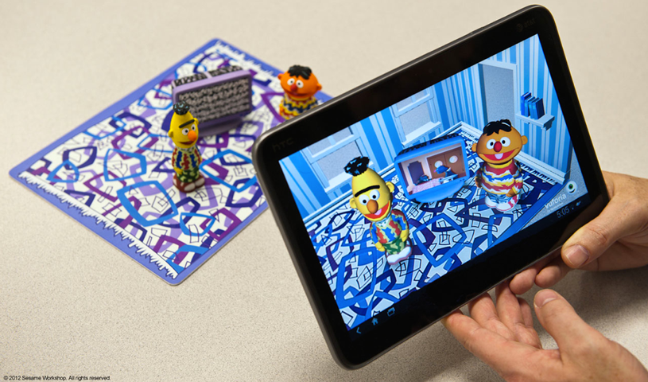
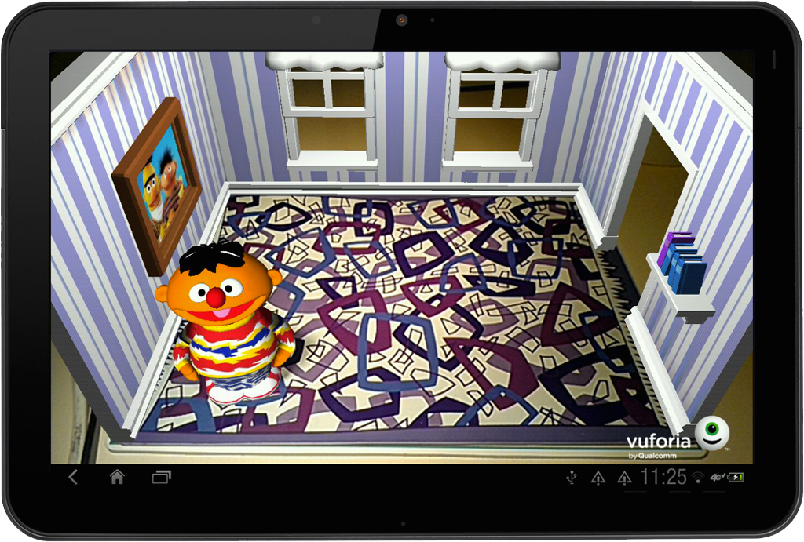
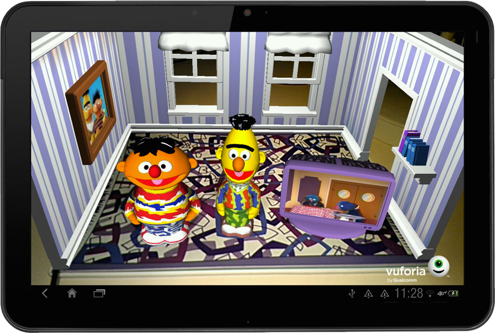
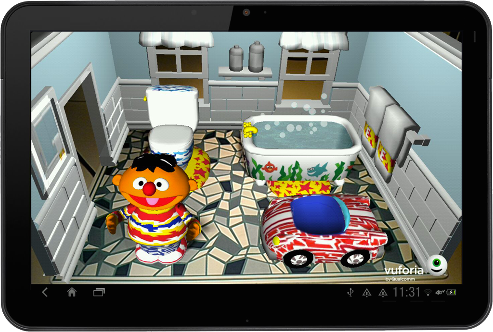

watch demo video | read more
objectives
featuring qualcomm’s next-gen Vuforia 3D AR technology, we explored new ways of playing by allowing kids to connect their physical toys and interactively interact with augmented experience on touch devices.
role + responsibilities
creative lead for the overall UX design and usability, as well as leading the ideation and iteration process with the design & development team.
deliverables
working prototype (BETA) deployed on Android HTC tablet. this prototype was presented live on stage at CES 2012 (during Qualcomm's keynote) with a special live appearance by loveable old Grover, everyone's favourite purple muppet.
feature snapshots



client
qualcomm | vienna
process
agile-led project management environment with daily stand-up and check out attended by the whole team; each stand up lasts no more than 10 minutes that highlights progress, status and identifying any potential road blocks from each team member.
tools
unity 3D, autodesk maya, adobe creative suits, and activecollab project management tool.
. . . . .
#trigger, #shanghai, #losangeles, #3D-AR, #VuforiaAR, #Android
. . . . .